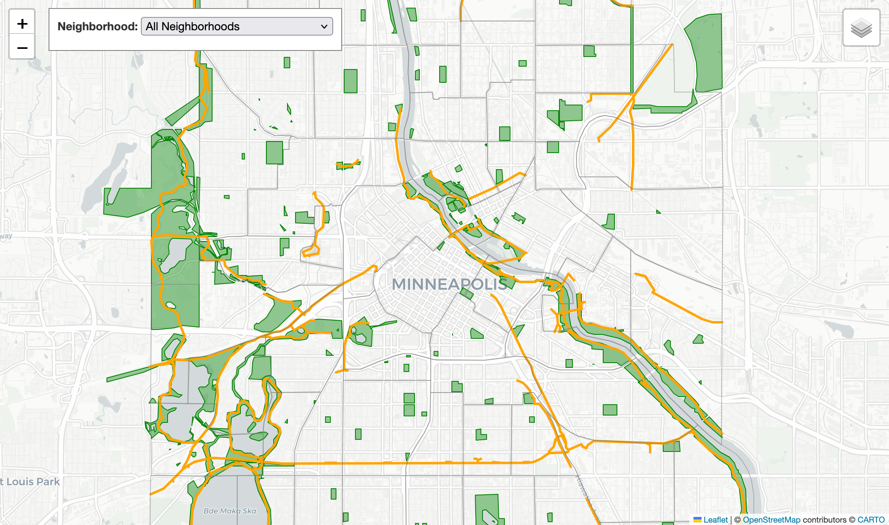

PYTHON · ARCGIS PRO · ARCPY · ARCADE
Hydraulic/Hydrologic Model Risk Assessment
Automated the processing and analysis of hydraulic/hydrologic model outputs to generate flood risk scores for stormwater infrastructure.
View project →SELECTED WORK
GIS, spatial analysis, automation, and data analysis projects.
PYTHON · ARCGIS PRO · ARCPY · ARCADE
Automated the processing and analysis of hydraulic/hydrologic model outputs to generate flood risk scores for stormwater infrastructure.
View project →
ARCGIS PRO · ARCGIS ONLINE · WORDPRESS
Created web maps to support communication on MNTU's website.
View project →
PYTHON · ARCPY · SCIKIT-LEARN · PANDAS
Developed an automated workflow that analyzes maintenance records and uses completed work to update storm and sewer asset condition information.
View project →
GEOPANDAS · FOLIUM · PYTHON
Created an interactive dashboard to analyze and compare the amount of parks and trails in neighborhoods across Minneapolis.
View project →
R · TIDYVERSE · ADOBE ILLUSTRATOR
Explored NOAA tsunami data using statistical analysis, visualization, and narrative communication in R.
View project →
FIELD MAPS · ARCGIS PRO · MATPLOTLIB · GNSS
A field study testing whether the Midtown Greenway channels local wind into an east-west direction.
View project →